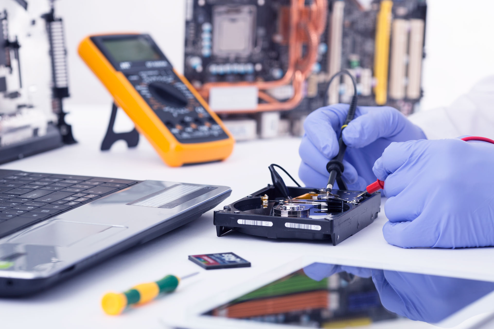
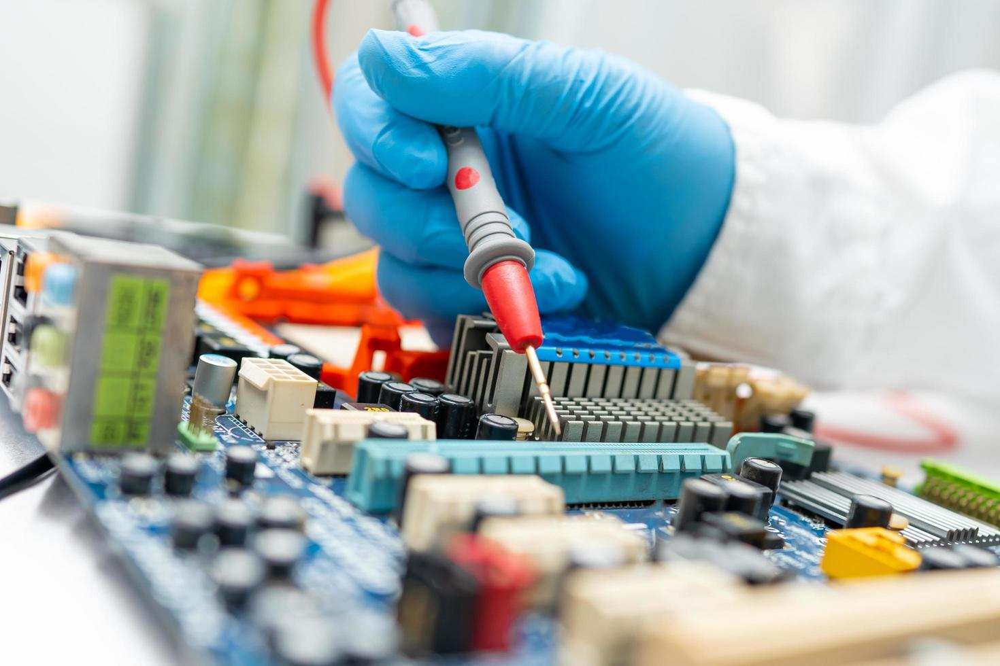
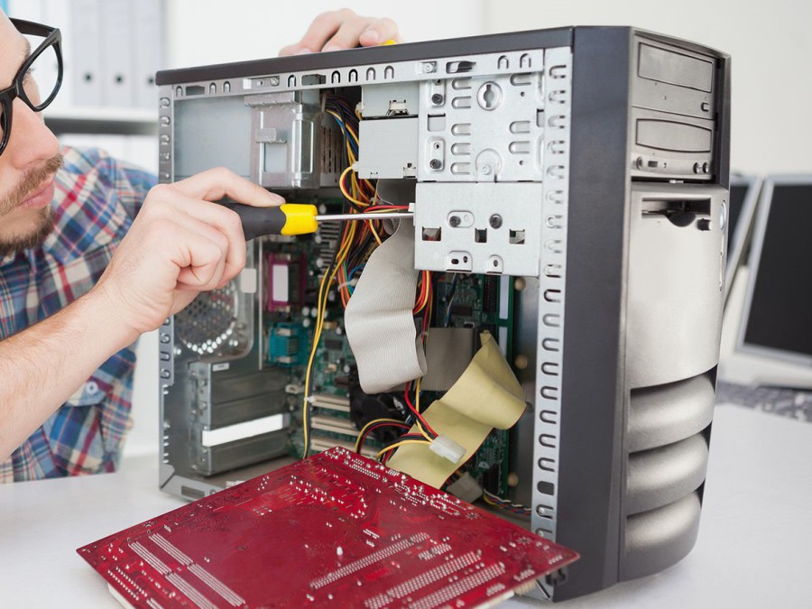
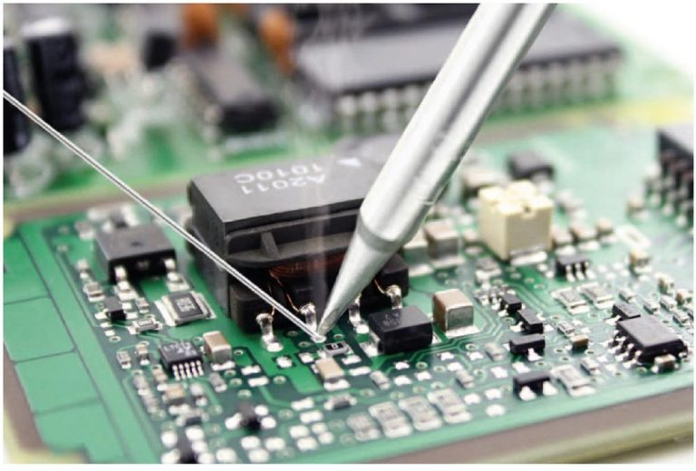
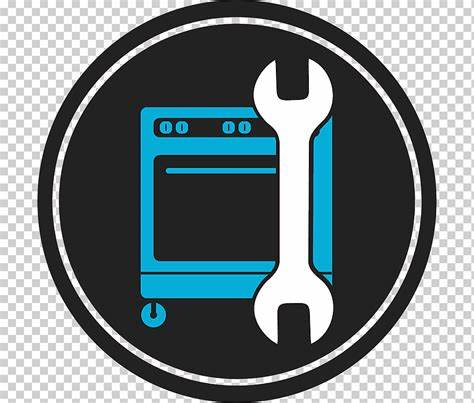

Impulsamos industrias, nuestra misión es tu éxito.
INICIO
INSTALACIÓN DE CAMARAS
DESARROLLO DE SOFTWARE
MANTENIMIENTO Y SOPORTE DE REDES
INTERNET DE LAS COSAS
MANTENIMIENTO PREVENTIVO Y CORRECTIVO DE COMPUTO
COMPRA Y VENTA DE COMPUTADORES
Mantenimiento preventivo y correctivo de computo
Asegura el rendimiento y la longevidad de tus equipos con nuestro servicio especializado de Mantenimiento
Preventivo y Correctivo de Cómputo. Entendemos que la tecnología es clave para la productividad de tu empresa,
por lo que ofrecemos soluciones completas para mantener tus sistemas funcionando sin interrupciones.
Nuestro mantenimiento preventivo incluye la limpieza física interna y externa de los dispositivos, optimización
de software, actualizaciones necesarias, y diagnóstico de fallos para prevenir problemas futuros.
En caso de incidencias, nuestro mantenimiento correctivo abarca la reparación de componentes dañados,
solución de fallos críticos de software y hardware, y restauración de la operatividad en el menor tiempo
posible. Con nuestro equipo técnico certificado y herramientas avanzadas, garantizamos un servicio rápido,
eficiente y adaptado a tus necesidades. ¡Confía en nosotros para mantener tus dispositivos en óptimas
condiciones y evitar pérdidas de tiempo y productividad!




Mantenimiento Preventivo

-Limpieza interna y externa de equipos de cómputo.
-Optimización del sistema operativo y programas.
-Actualización de drivers y software esencial.
-Verificación y ajuste de componentes de hardware.
-Inspección de cables y conexiones para prevenir fallos.
-Diagnóstico completo para anticipar problemas futuros.
Mantenimiento Correctivo
-Reparación o sustitución de partes defectuosas.
-Recuperación y restauración de datos importantes.
-Reinstalación y configuración de sistemas operativos.
-Solución de fallos críticos de hardware y software.
-Atención a emergencias para minimizar tiempos de inactividad.
-Diagnóstico preciso para restablecer el funcionamiento del equipo.
Soporte Técnico Remoto
-Asistencia en tiempo real para solucionar problemas de software.
-Configuración remota de programas y periféricos.
-Desinfección de malware y optimización del sistema.
-Respaldo y sincronización de datos en la nube.
-Instalación y actualización de aplicaciones según requerimientos.
-Soporte continuo para mantener la productividad de tu negocio.
Asesoría en Equipos
-Recomendación de equipos según las necesidades de tu empresa.
-Evaluación de rendimiento y posibles mejoras.
-Análisis de compatibilidad para nuevos componentes.
-Estudio de viabilidad para actualizaciones de hardware.
-Planificación de renovación tecnológica.
-Soporte en la adquisición de equipos con la mejor relación calidad-precio.
Nos especializamos en el mantenimiento y soporte de redes, ofreciendo soluciones confiables y de alta calidad
para optimizar la infraestructura tecnológica de su empresa. Ya sea para pequeñas o grandes empresas, nuestro servicio
asegura el correcto funcionamiento y la eficiencia de sus redes de datos, minimizando tiempos de inactividad y mejorando
la conectividad.
Brindamos soporte integral para equipos, servidores y redes, utilizando las herramientas más avanzadas y
adaptadas a las necesidades específicas de cada cliente. Nuestro objetivo es asegurar una red robusta,
segura y eficiente, proporcionando tranquilidad a nuestros clientes y permitiéndoles enfocarse en el crecimiento
de su negocio sin preocupaciones tecnológicas.
Con nuestro servicio, tendrás acceso a mantenimiento preventivo, soporte técnico especializado y resolución de
problemas de redes, garantizando la estabilidad y el rendimiento óptimo de su infraestructura tecnológica en
todo momento.
Entendemos lo esencial que es el correcto funcionamiento de tus equipos de cómputo para la productividad
de tu empresa. Nuestro servicio de Mantenimiento Preventivo y Correctivo está diseñado para asegurar que tus
sistemas operen al máximo rendimiento y sin interrupciones. Identificamos y prevenimos problemas antes de
que se conviertan en fallos críticos mediante limpiezas internas, actualizaciones y optimización de software.
Cuando surgen emergencias, nuestro equipo actúa rápidamente para reparar o reemplazar componentes dañados,
restaurar datos perdidos y garantizar que el equipo vuelva a estar operativo en el menor tiempo posible. Además,
ofrecemos soporte técnico remoto para resolver problemas de software sin necesidad de visitas físicas, brindando
soluciones eficientes en tiempo real.
Confía en nosotros para mantener tus sistemas seguros y actualizados, maximizando la vida útil de tu equipo y
minimizando tiempos de inactividad. ¡Estamos aquí para proteger tu inversión y garantizar que tu negocio siga
avanzando sin contratiempos!
Para obtener una solución a la medida de sus necesidades, te invitamos a contactar con nuestro equipo de expertos.